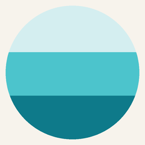

pulse · 1.6s · brightness fallback
register · active small
For 16-31px sizes only.
Cascade is invisible at small sizes. Pulse uses
filter: brightness
to signal activity without visual noise. Below 16px: no motion, ever.